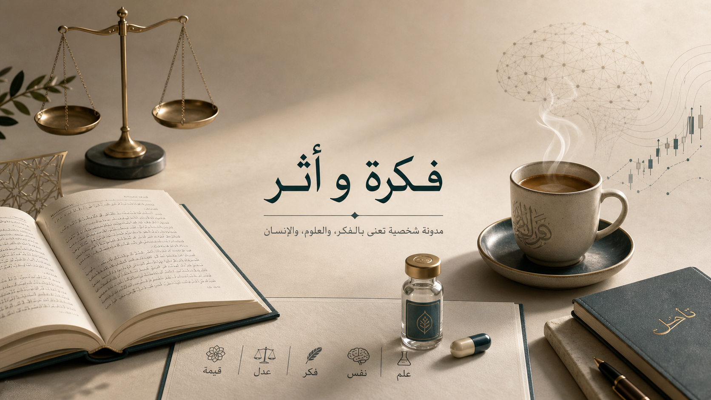

مدونة عربية شخصية · علم ومعنى · قهوة وتركيز
مساحة كتابة تجمع الفقه الحنبلي وأصوله، والمقاصد، والإنسان، والاقتصاد الإسلامي
هذا التصميم مهيأ لمدونة شخصية عربية بهوية هادئة ومعاصرة، يوازن بين الجدية الأكاديمية والدفء الإنساني؛ بحيث يظهر تخصّصك الفقهي والفكري، مع ملمح بصري واضح لحب القهوة بوصفها رفيقة التأمل والكتابة.

مركز الثقل البصري
صورة هادئة توحّد الفقه والمعرفة الإنسانية والبعد الشخصي في مشهد واحد.
المحاور الرئيسة
بطاقات المحاور هنا تمثل البنية الأولى للمدونة، ويمكن تحويل كل بطاقة لاحقًا إلى قسم مقالات مستقل أو صفحة أرشيف متخصصة.
الفقه الحنبلي
عرض المسائل، تحرير المذهب، وبناء المقالات على لغة علمية واضحة تحافظ على الروح التراثية دون جمود.
أصول الفقه
تحليل الأدلة، مناهج الاستدلال، وبناء الملكة الأصولية بأسلوب يصلح للتدريس والبحث والكتابة العامة المتخصصة.
مقاصد الشريعة
ربط الجزئيات بالكليات، ومناقشة الامتداد المقاصدي في القضايا المعاصرة دون تفريط في الضبط المنهجي.
علم الاجتماع
قراءة البنى الاجتماعية، والعلاقات بين القيم والمؤسسات والتحولات الثقافية في المجتمعات المسلمة المعاصرة.
علم النفس
مقالات في السلوك والدافعية والانحيازات والإدراك، مع مساحة للتأمل في الإنسان من زاوية علمية ومعنوية.
الاقتصاد الإسلامي
مناقشات في المال والتمويل والعدالة التوزيعية، مع ربط النظرية الاقتصادية بالبنية الفقهية والمقاصدية.
فكرة التصميم
اعتمدتُ هنا لغة بصرية تميل إلى الهدوء والانسياب: ألوان دافئة، تباين محسوب، خطوط عربية مناسبة للقراءة الطويلة، ومساحات بيضاء تمنح المقالات ثقلًا لا فوضى. الهدف أن تبدو المدونة شخصية ومحترفة في الوقت نفسه.
كيف تتوسع لاحقًا
- إضافة صفحة مقالات كاملة مع بطاقات أرشيف.
- إضافة صفحة تعريف وسيرة علمية وروابط النشر.
- ربط النموذج لاحقًا بمنصة نشر فعلية مثل GitHub Pages أو Netlify CMS أو WordPress Headless.
القهوة هنا جزء من الشخصية لا مجرد تفصيل بصري
حضور القهوة في التصميم جاء بوصفها علامة على مزاج الكتابة: هدوء، تركيز، طول صحبة مع الكتب والأفكار، لا بوصفها عنصرًا زخرفيًا زائدًا. لهذا جاءت اللمسة اللونية بنية دافئة ومقيدة داخل نظام بصري منضبط.
عربي عصري
تحريري بسيط
أكاديمي هادئ
دفء القهوة
قابل للتوسعة